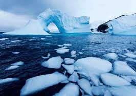
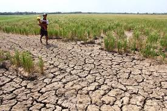

🌊 BIẾN ĐỔI KHÍ HẬU
1. Giới thiệu
Biến đổi khí hậu là sự thay đổi dài hạn về nhiệt độ và kiểu thời tiết, chủ yếu do hoạt động của con người (đốt nhiên liệu hóa thạch, phá rừng) tạo ra khí nhà kính, giữ nhiệt và làm Trái Đất nóng lên, gây ra các hiện tượng cực đoan (bão, hạn hán, lũ lụt, xâm nhập mặn), đe dọa nghiêm trọng sức khỏe, an ninh lương thực, kinh tế và hệ sinh thái toàn cầu, đặc biệt ở Việt Nam.
| Băng tan | Hạn hán | Nước biển dâng |
|---|---|---|
|

Băng ở Bắc Cực tan nhanh |

Hạn hán kéo dài |
Nước biển dâng, ngập lụt |
2. Nguyên nhân và hậu quả
| Nguyên nhân | Hậu quả |
|---|---|
| Đốt nhiên liệu hóa thạch (than, dầu, khí) | Nhiệt độ Trái Đất tăng |
| Phát thải khí CO₂ và CH₄ | Hiệu ứng nhà kính gia tăng |
| Phá rừng, cháy rừng | Mất đa dạng sinh học |
| Sản xuất nông nghiệp quy mô lớn | Thời tiết biến đổi thất thường |
| Nhiệt độ toàn cầu tăng | Băng tan, nước biển dâng |
3. Biện pháp khắc phục biến đổi khí hậu🌍
Biến đổi khí hậu đang ảnh hưởng nghiêm trọng đến môi trường sống của con người. Để bảo vệ Trái Đất, mỗi cá nhân và cộng đồng cần thực hiện những biện pháp cụ thể sau:
- 💡 Sử dụng tiết kiệm điện, nước và tài nguyên thiên nhiên.
- ☀️ Ưu tiên sử dụng năng lượng tái tạo như năng lượng mặt trời, gió.
- 🌳 Trồng cây, bảo vệ rừng và tăng diện tích cây xanh.
- 🚫🛍️ Hạn chế sử dụng túi ni-lông và đồ nhựa dùng một lần.
- ♻️ Tái chế rác thải và phân loại rác đúng cách.
- 🚲🚌 Sử dụng phương tiện giao thông công cộng hoặc xe đạp.
- 📢 Nâng cao ý thức bảo vệ môi trường trong cộng đồng.
- 🤝 Tham gia các hoạt động bảo vệ môi trường và ứng phó biến đổi khí hậu.
🌍 Hình ảnh minh họa
|
Bảo vệ Trái Đất |
Tái chế rác thải |
Năng lượng mặt trời |
4. Video
5. Bài hát về thiên nhiên, trái đất
- Tên bài hát: Trái Đất Này Là Của Chúng Mình
- Nhạc sĩ: Trương Quang Lục
- Lời thơ: Định Hải
- Năm sáng tác: Khoảng những năm 1980
- Thể loại: Ca khúc thiếu nhi – giáo dục môi trường
Giới thiệu:
“Trái Đất Này Là Của Chúng Mình” là ca khúc dành cho thiếu nhi, thể hiện
tình yêu thiên nhiên và khẳng định Trái Đất là ngôi nhà chung của toàn
nhân loại. Bài hát mang thông điệp giáo dục ý thức bảo vệ môi trường,
thường được sử dụng trong các hoạt động học đường.
6. Thông tin mở rộng
Tài liệu tham khảo Liên Hợp Quốc – Biến đổi khí hậu